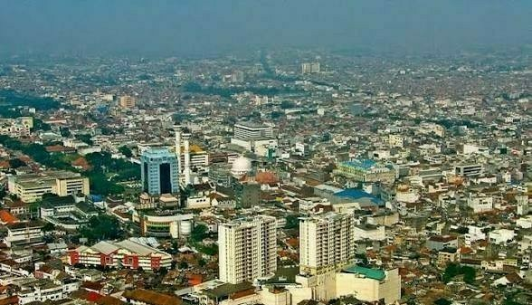

01
Perubahan Fisik Wilayah

🌿 BEFORE — Lahan Hijau & Alami
🏙️ AFTER — Perkotaan & Padat
🏙️ Setelah Urbanisasi
- Kepadatan penduduk tinggi (+400%)
- Jalan raya dan gedung pencakar langit
- Transportasi massal & lalu lintas padat
- Pusat perbelanjaan & zona industri
🌾 Sebelum Perubahan
- Hamparan sawah & pepohonan rindang
- Udara sejuk, suara alam mendominasi
- Aktivitas agraris & permukiman tradisional
- Rendahnya emisi kendaraan bermotor
DAMPAK PERUBAHAN LANDSKAP
02
Jejak Perubahan Wilayah
🌳 Wilayah masih didominasi lahan terbuka hijau. Populasi relatif jarang, rumah-rumah tradisional dengan halaman luas. Sungai masih jernih.
🏡 Migrasi masuk meningkat, muncul pemukiman padat di pinggiran. Jalan setapak mulai diperkeras. Lahan pertanian berkurang 7%.
🏫 Pembangunan fasilitas umum: sekolah, puskesmas, dan pasar modern. Jumlah kendaraan bermotor meningkat tajam, konektivitas jalan diperlebar.
🚌 Transportasi umum mulai padat. Lahan hijau tersisa sekitar 42%. Pusat bisnis kecil mulai menjamur, harga tanah melonjak 3x lipat.
📱 Wilayah hampir sepenuhnya urban, kepadatan bangunan mencapai 80%. Macet menjadi isu utama, polusi udara terdeteksi, namun ekonomi tumbuh pesat.
🌆 Kawasan metropolitan terintegrasi digital. Smart city mulai diterapkan, tetapi ruang terbuka hijau hanya 8%. Tantangan keberlanjutan lingkungan menjadi fokus utama.
03
Grafik Dinamika Penduduk Bandung
Sumber: Bandung Dalam Angka & Riset Proyek IPAS